Termal Su
Metodun merkezinde yarımadanın mineral zengini kaynağı var. Isı ve mineral dengesi, gevşemeyi ve yenilenme hissini destekler; her program suyla başlar, suyla tamamlanır.

Amaç yalnızca dinlenmek değil; daha uzun ve daha iyi yaşamaya alan açmak. Termal suyun etrafında kurulmuş, kişiye özel planlanan bir wellness kültürü.
Tor Thermal'de wellness bir hizmet listesi değil, bir yöntemdir. Her konuğun programı bu dört sütun üzerinde, uzman ekiple birlikte kişiye özel planlanır.
Metodun merkezinde yarımadanın mineral zengini kaynağı var. Isı ve mineral dengesi, gevşemeyi ve yenilenme hissini destekler; her program suyla başlar, suyla tamamlanır.
Tek tip kür yok. Uyku düzeninizden hareket alışkanlığınıza kadar dinlenir; hedefiniz uzman ekiple konuşulur ve size özel bir akış planlanır.
Diyet Merkezi ve organik pazar aynı felsefenin parçası: bölge üreticisinden gelen malzeme, kişiye özel beslenme planlamasıyla sofraya taşınır.
Su içi egzersizden orman yürüyüşüne, spor kulübünden sabah yogasına — hareket, programın süsü değil omurgasıdır; temposu size göre ayarlanır.
Kişisel programınız bu 13 uygulamadan harmanlanır. Hiçbiri tek başına bir vaat değildir; her biri, uzman ekibin planladığı bütüncül programı destekler.
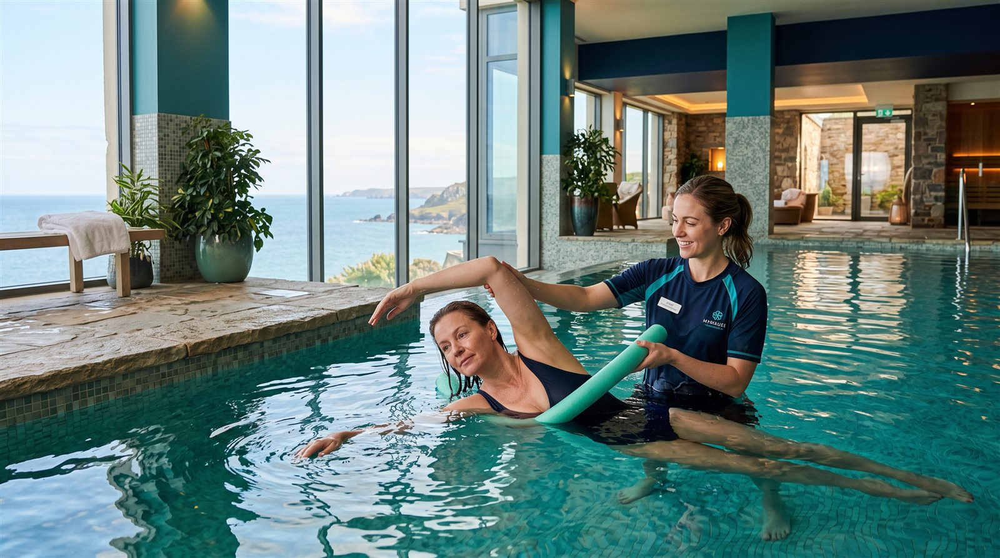


Mineral zengini kaynak suyu, mahremiyet odaklı iki ayrı bölümde.
Detayı İncele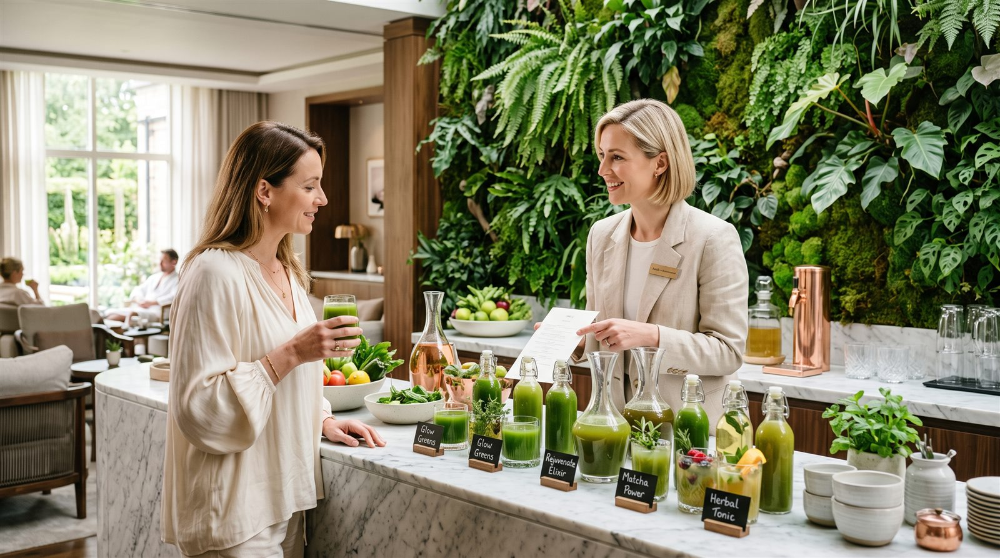
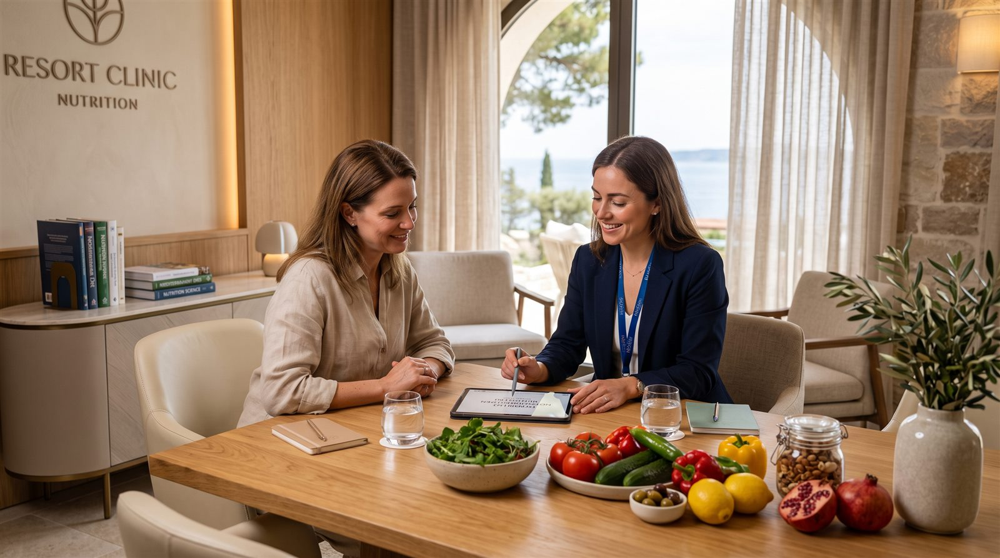
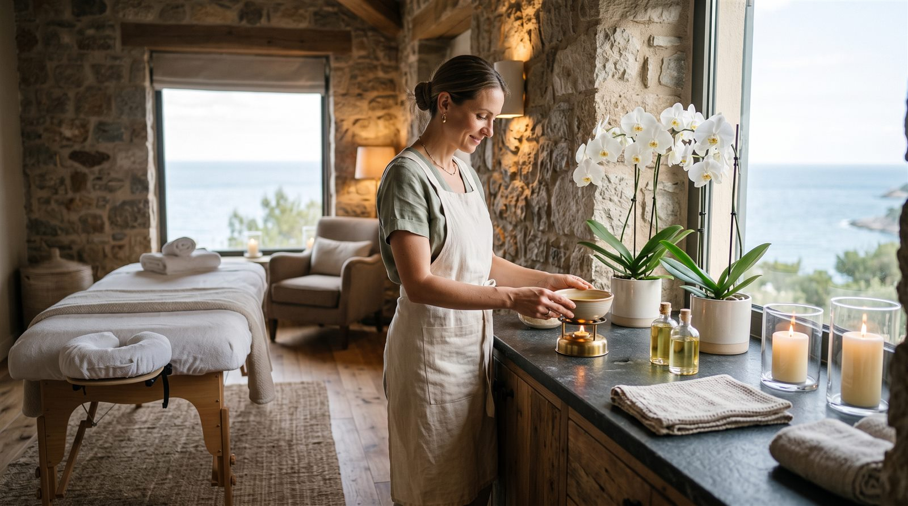
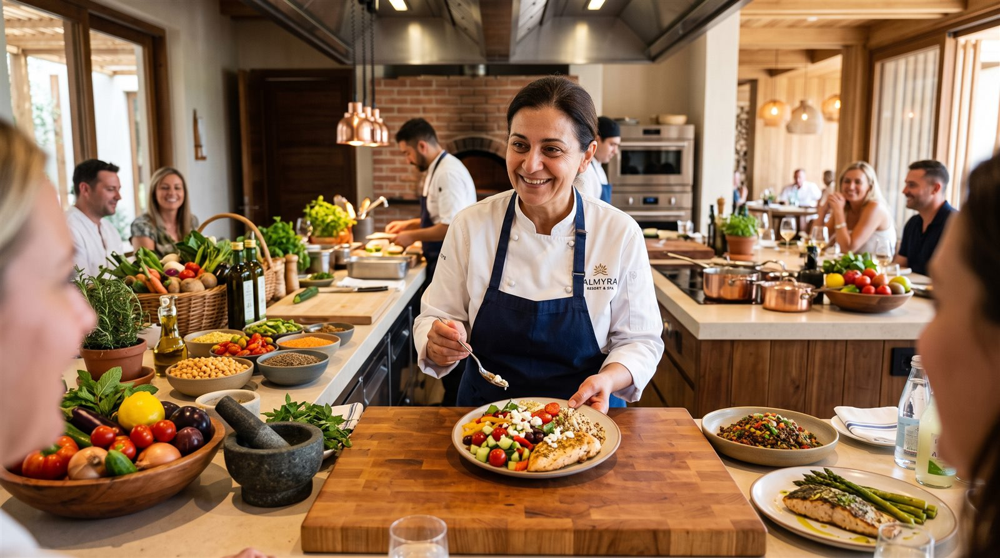
Beslenme ve aktivite planlamasıyla günlük yaşam düzenini destekler.
Detayı İncele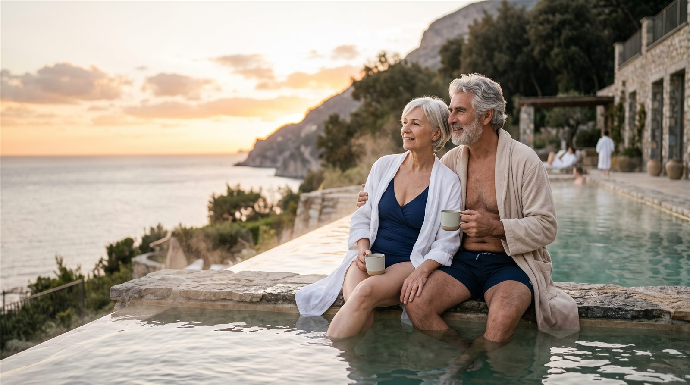
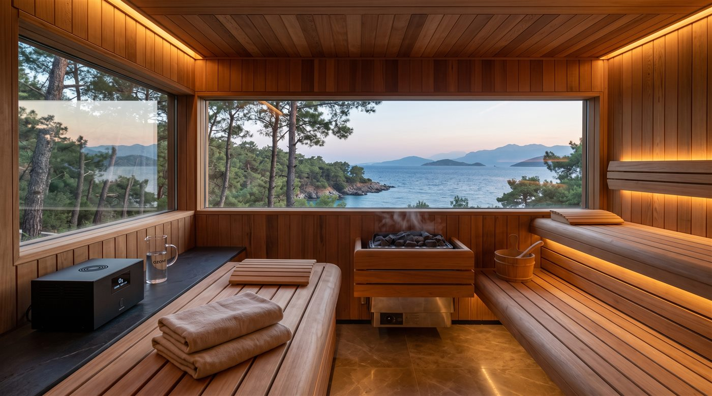

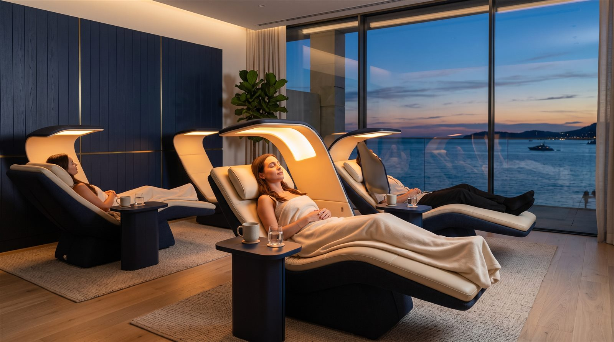
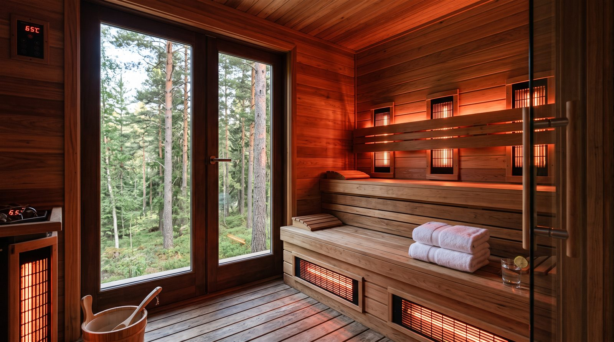
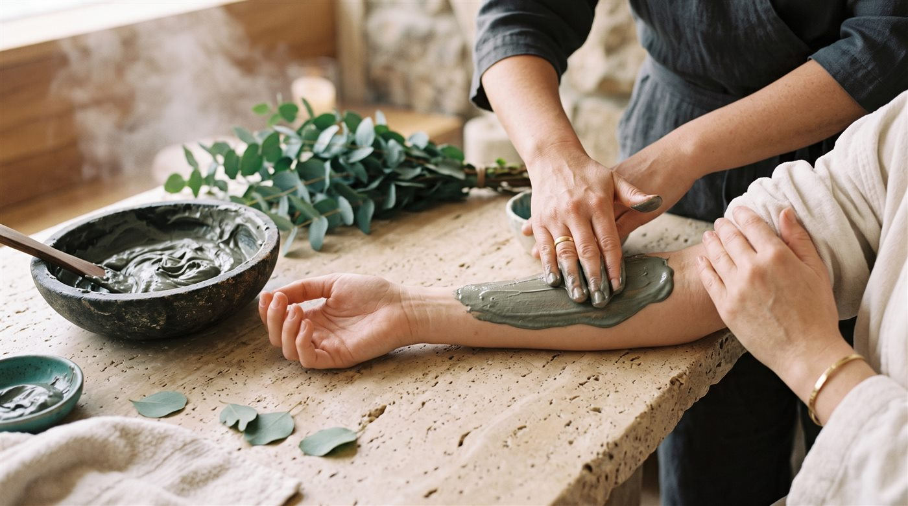
Uygulama içerikleri bilgilendirme amaçlıdır; tıbbi tedavi vaadi içermez. Kişiye özel programlar uzman ekiple planlanır. Görseller temsilîdir; yapay zekâ destekli konsept çalışmalarından oluşur.
Tüm wellness programlarının ortak açılışı: termal kaynaktan fenerde gün batımına uzanan yedi adımlık imza yolculuğumuz.
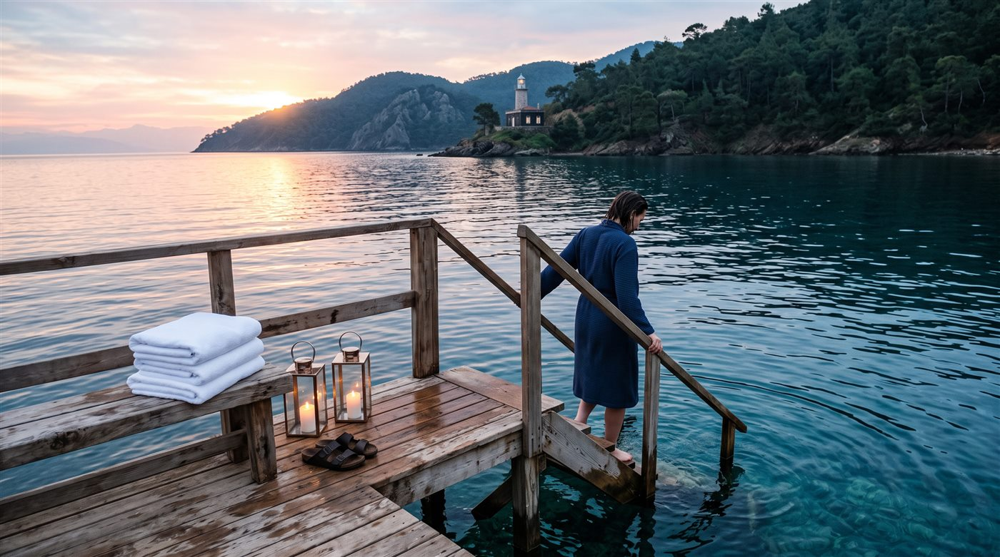

Tor Thermal'de mahremiyet bir seçenek değil, mimarinin parçası. Kadın konuklarımız için termal havuz, spa üniteleri ve plaj bölümü tamamen ayrı planlandı.
Gün boyu kesintisiz kullanım; sauna, buhar odası ve dinlenme terasları da bu bölümün içinde. Aileniz tek yerleşkede, herkes kendi ritminde.
Ailenize Uygun Daire + Dönemi BulunAşağıdaki kürler fikir vermesi için hazırlanmış temsilî örneklerdir. Gerçek programınız, hedefinize ve sağlık geçmişinize göre uzman ekiple birlikte planlanır.
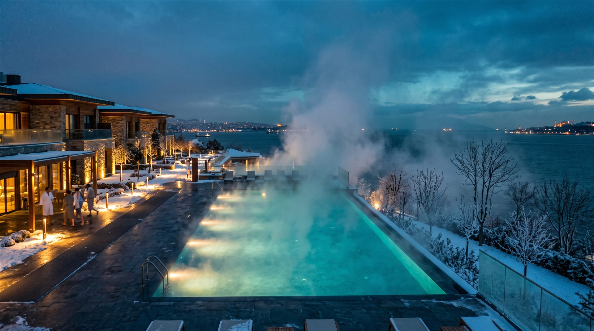
Temsilîdir; içerik kişiye göre planlanır.
Bilgi Alın
Temsilîdir; içerik kişiye göre planlanır.
Bilgi AlınTemsilîdir; içerik kişiye göre planlanır.
Bilgi AlınBu sayfadaki içerikler bilgilendirme amaçlıdır; herhangi bir hastalığın teşhis veya tedavisine yönelik vaat içermez. Programlara başlamadan önce sağlık durumunuz için hekiminize danışınız.
Deneyim Günü'nde havuzları deneyin, wellness ekibiyle tanışın, ritüelin ilk adımını atın. Karar, size ait.